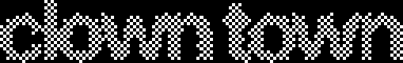

← ARCADE
?
Two teams. One tiny car.
Keep track of every clown.
← →
SELECT TEAM
↑ ↓
SCORE
R + R
RESET
ESC
BACK
M
MUTE / UNMUTE
LEAVE CLOWN TOWN?
You are 45 years from home.
The arcade is still back in 1981,
right where you left it.
GO BACK TO 1981
STAY IN CLOWN TOWN
ARROWS SELECT · ENTER CONFIRM
1981
TRAVELING BACK IN TIME
LEAVING CLOWN TOWN
GOING BACK HOME
INITIALIZING


TEAM 1
−
+
VS
TEAM 2
−
+
0 — 0
TOTAL: 0 CLOWNS